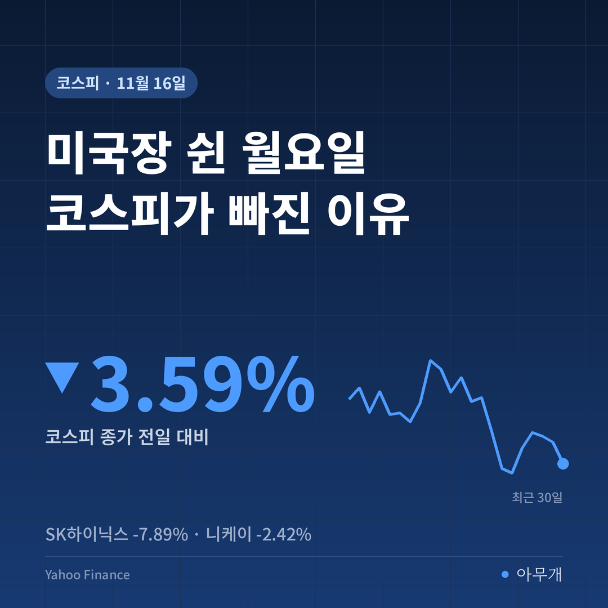
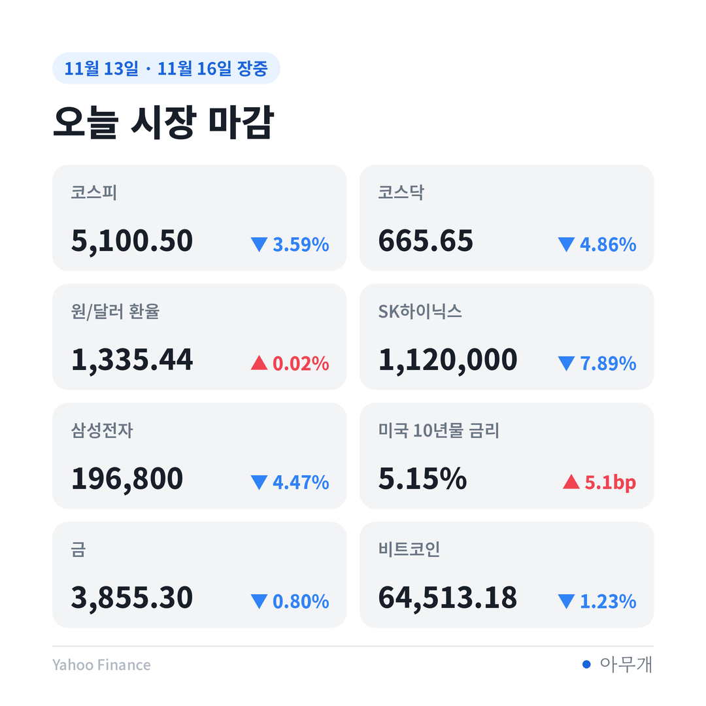
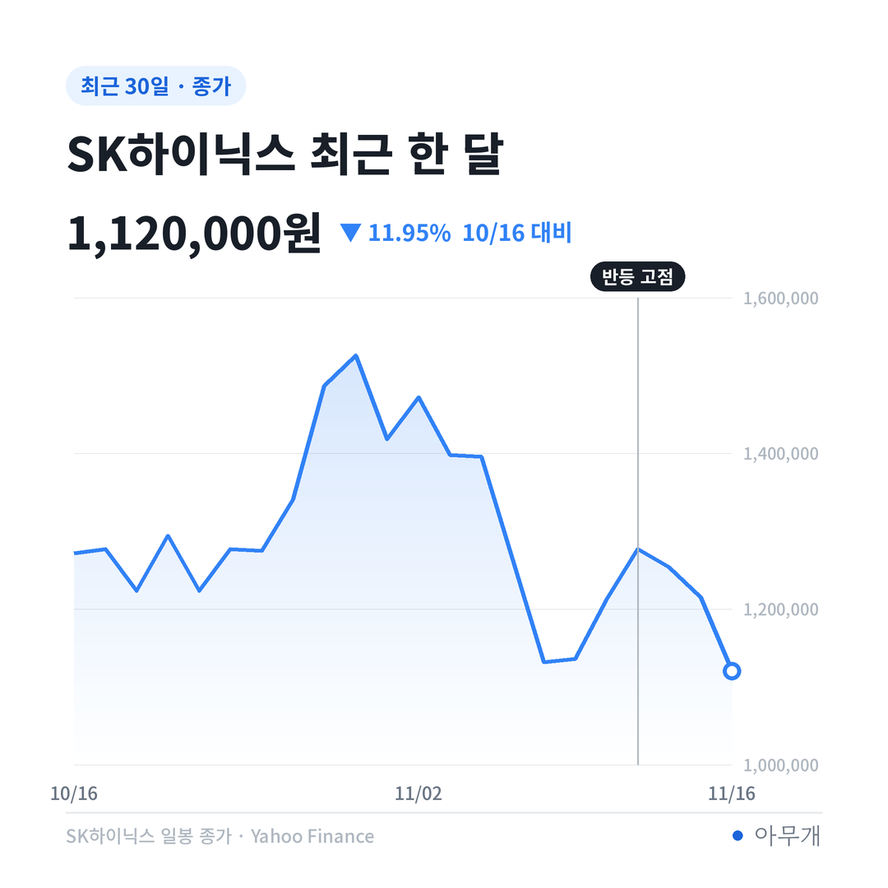
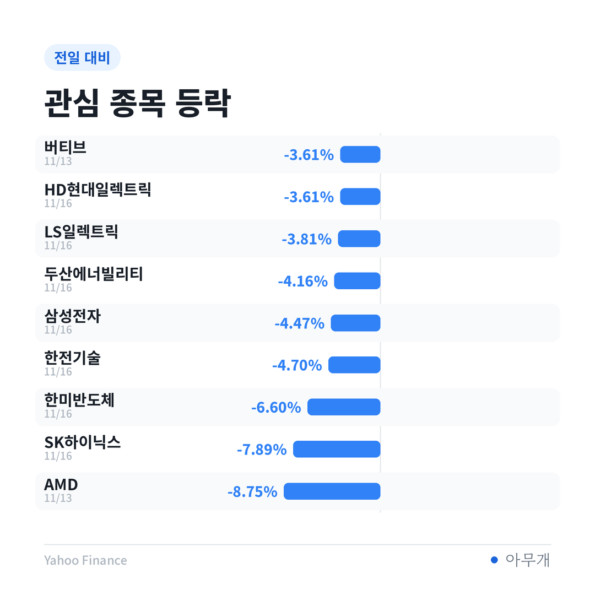

📷 사진 1 자리
출발은 플러스, 마감은 5,100선
오늘 장은 오르면서 시작했어요. 흐름을 시간 순서로 보면 이래요[1].
| 시각 | 코스피 |
|---|---|
| 개장 | 0.28% 오른 채 출발[1] |
| 개장 10분 뒤 | 하락 전환[1] |
| 오후 | 장중 저점 5,069.83(-4.17%)[1] |
| 오후 2시 40분 | 외국인 1조4,879억원·기관 3,064억원 순매도, 개인 1조3,306억원 순매수[1] |
| 마감 | 5,100.50(-3.59%) |
외국인과 기관이 함께 팔고 개인이 받아 낸 하루예요[1][8]. 코스닥은 더 크게 빠졌어요. 지난 13일 정부 자본시장 간담회 뒤 부양책 기대가 실망으로 바뀐 영향도 거론돼요[1].
같은 -3.59%는 2주 전에도 있었어요. 11월 3일 코스피는 5,648.79로 3.59% 내렸어요[7]. 그 뒤 9일 5,018.85까지 밀렸다가 11일 5,375.36까지 올라왔는데 오늘 종가는 그 반등폭의 약 77%를 지운 자리예요. 2일 5,859.08과 비교하면 -12.95%예요.
주말 사이 바뀐 세 가지
금요일 밤 미국 증시는 이미 반영돼 있었어요. 엔비디아도 13일 이후 거래가 없었어요. 그런데도 서울이 크게 빠진 건 주말에 나온 재료 때문이라는 분석이에요[1].
첫째는 엔비디아의 돈줄 역할이에요. 월스트리트저널은 콜레트 크레스 임시 CEO 체제의 엔비디아가 AI 스타트업과 데이터센터에 대던 자금 지원을 크게 줄일 것이라고 내다봤어요[2]. 이미 오하이오 오픈AI 데이터센터에 대한 보증은 2,500억 달러에서 절반 아래로 줄었어요[2][3]. UBS는 엔비디아가 지원을 줄이면 시장에서 500억 달러 이상이 빠질 수 있다고 봤어요[2].
이 이야기가 한국 반도체에 먼저 닿는 이유가 있어요. 엔비디아 돈으로 GPU를 사던 회사들이 주문을 줄이면 GPU에 들어가는 HBM(고대역폭 메모리) 주문도 같이 줄어들 수 있어서예요. 엔비디아 주가 자체보다 'AI 투자에 돈이 계속 도느냐'는 질문이에요.
둘째는 물가와 금리예요. 13일 발표된 미국 10월 생산자물가(PPI)는 1년 전보다 6.5% 올라 2022년 11월 이후 가장 높았어요[1][4]. 크리스토퍼 월러 연준 이사가 '빅스텝'(0.5%포인트 인상)을 입에 올린 뒤라 긴축 경계가 커졌어요[1]. 미국 10년물 금리는 5.154%로 1주 사이 +29.5bp(0.01%포인트) 올라 있어요.
셋째는 연준의 경고예요. 연준은 금융안정보고서에서 AI 투자와 함께 빠르게 늘어난 부채를 금융 시스템의 약한 고리로 꼽았어요[1][5].
| 재료 | 내용 | 성격 |
|---|---|---|
| 엔비디아 자금 지원 축소 | 크레스 체제에서 지원을 줄일 것[2] | 🗣️ WSJ 전망 |
| 오하이오 보증 축소 | 2,500억 달러에서 절반 아래로[2][3] | ✅ 보도된 협상 결과 |
| 시장 유출 500억 달러 | UBS 분석[2] | 🗣️ 증권사 분석 |
| 미국 PPI 6.5% | 2022년 11월 이후 최고[1][4] | ✅ 발표 |
| 연준 AI 부채 경고 | 금융안정보고서[1][5] | ✅ 발표 |
| 앤트로픽 상장 앞 현금 확보 | 19일 상장 앞 매도[1] | ⚠️ 해석, 확인 안 됨 |
도쿄·타이베이도 같은 날
서울만의 일은 아니었어요. 니케이는 59,662.02(-2.42%)로 마쳤고, 대만 가권지수는 장중 한때 5.71%까지 빠졌어요[1]. AI 반도체 비중이 큰 시장일수록 낙폭이 컸어요.
📷 사진 2 자리
환율은 조용했어요. 원/달러 환율은 수집 시각 장중 1,335.44원으로 +0.02%예요. 외국인이 1조원 넘게 팔았는데도 환율이 크게 오르지 않은 건, 10월부터 1,330원 안팎에서 반도체 기업의 달러 매도와 외국인 자금 유출이 맞서 온 흐름이 이어진 것으로 볼 수 있어요[6]. 외국인 국내 주식 자금은 10월에만 193억1,000만 달러가 빠져나갔어요[6].
SK하이닉스 두 달 최저
SK하이닉스는 1,120,000원(-7.89%)으로 마감했어요. 9월 중순 이후 종가로는 가장 낮아요. 지난 11일 1,277,000원에서 사흘 거래일 만에 -12.29%예요.
📷 사진 3 자리
삼성전자는 196,800원(-4.47%), 한미반도체는 169,700원(-6.60%)이에요. HBM 비중이 큰 순서대로 더 빠졌어요. 1주로 보면 SK하이닉스는 -1.41%로 지난주 상승분을 다 반납했지만 삼성전자는 아직 +3.63%예요.
📷 사진 4 자리
내 계좌와 대출 이자
지난 11일 종가에 SK하이닉스를 1,000만원어치 샀다면 오늘 평가액은 약 877만원이에요. 사흘 거래일 동안 약 123만원이 줄어든 셈이에요.
같은 날 대출 쪽 숫자도 나왔어요. 10월 신규 취급액 기준 코픽스는 3.62%로 2024년 2월 이후 가장 높아요[9][10]. 국민은행은 이 기준 주택담보대출 변동금리(6개월)를 연 4.85~6.25%로 올려요[9]. 주가가 빠지는 날 대출 이자는 오르고 있어서, 빚을 내 주식을 산 계좌에는 양쪽에서 부담이 커져요.
18일 아침 전까지의 세 갈래
| 시나리오 | 무엇을 보면 되나 | 예상되는 영향 |
|---|---|---|
| 실적에서 투자 계획 유지 | 엔비디아 실적(한국 18일 오전)에서 데이터센터 매출·투자 방향 설명[1] | 오늘 반영된 '돈줄 축소' 걱정이 일부 풀릴 수 있음 |
| 자금 지원 축소 확인 | 크레스 임시 CEO가 파트너 지원을 줄인다고 밝힐 때[2] | HBM 주문 걱정이 이어져 SK하이닉스 부담 |
| 금리가 더 오름 | 18일 미국 20년물 입찰, 10년물 5.154% 위 | 성장주 전반 할인율 부담 |
오늘 하락은 엔비디아 '사람' 문제가 엔비디아 '돈' 문제로 옮겨 간 첫날로 보여요. CEO가 누구냐보다 엔비디아가 AI 업계에 돈을 계속 대 줄지가 HBM 주문과 직접 이어지기 때문이에요. 그래서 18일 실적에서는 매출 숫자만큼 파트너 지원과 투자 계획에 대한 설명이 중요해 보여요.
✍️ 직접 보거나 들은 경험이 있으면 위 문단에 한두 줄 덧붙이세요 (이 안내 줄은 지우기)
반대로 보면 자금 지원 축소는 '거품을 줄이는 일'이라는 시각도 있어요. 황 전 CEO도 사임 전부터 엔비디아가 백지수표 역할을 하던 시절은 끝났다고 말했어요[2]. 엔비디아가 지원을 줄여도 빅테크의 자체 투자가 이어지면 메모리 수요는 크게 흔들리지 않을 수 있어요.
18일 국내장 전에 확인할 것
참고한 기사
이 글은 정보 제공 목적이며 투자 권유가 아닙니다. 투자 판단과 책임은 본인에게 있습니다.
수치 출처: Yahoo Finance(시장 숫자), 연합뉴스(장중 수급, 오후 2시 40분 기준), 은행연합회(코픽스, 연합뉴스 인용)



